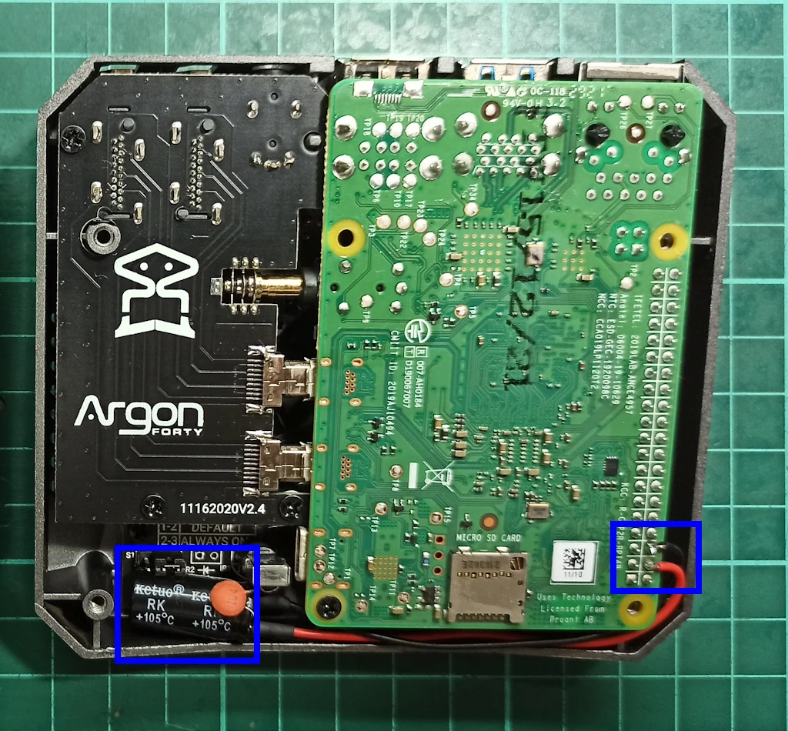

Unboxing & Review — Cómo Empezó Todo
INSYNE es una retro consola basada en Raspberry Pi 4, Batocera Linux y gabinete Argon One M.2.
Descubre cómo fue construida, los ajustes de hardware, el proceso de overclock y el museo digital detrás del proyecto.
Explorar proyecto →